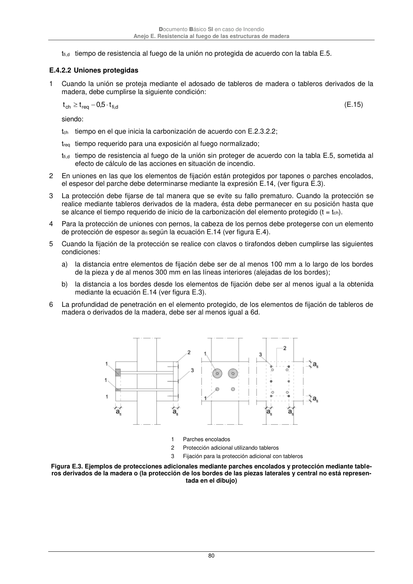

DB-SI · E.4.2.2 Uniones protegidas · versión 2025-03-04
SHA256: 0a2e78cd62471d9cc5cfe2efbc6aa39fdbad73c124aea7b039f9de96c141e105 · página física 80 de 92 · métodos de encabezado
solo si están cotejados.
Formatos: Markdown · JSON de bloques · PDF p. 80 · imagen PNG
Documento Básico SI en caso de Incendio Anejo E. Resistencia al fuego de las estructuras de madera 80 tfi,d tiempo de resistencia al fuego de la unión no protegida de acuerdo con la tabla E.5. E.4.2.2 Uniones protegidas 1 Cuando la unión se proteja mediante el adosado de tableros de madera o tableros derivados de la madera, debe cumplirse la siguiente condición: d ,fi req ch t 5,0 t t (E.15) siendo: tch tiempo en el que inicia la carbonización de acuerdo con E.2.3.2.2; treq tiempo requerido para una exposición al fuego normalizado; tfi,d tiempo de resistencia al fuego de la unión sin proteger de acuerdo con la tabla E.5, sometida al efecto de cálculo de las acciones en situación de incendio. 2 En uniones en las que los elementos de fijación están protegidos por tapones o parches encolados, el espesor del parche debe determinarse mediante la expresión E.14, (ver figura E.3). 3 La protección debe fijarse de tal manera que se evite su fallo prematuro. Cuando la protección se realice mediante tableros derivados de la madera, ésta debe permanecer en su posición hasta que se alcance el tiempo requerido de inicio de la carbonización del elemento protegido (t = tch). 4 Para la protección de uniones con pernos, la cabeza de los pernos debe protegerse con un elemento de protección de espesor afi según la ecuación E.14 (ver figura E.4). 5 Cuando la fijación de la protección se realice con clavos o tirafondos deben cumplirse las siguientes condiciones: a) la distancia entre elementos de fijación debe ser de al menos 100 mm a lo largo de los bordes de la pieza y de al menos 300 mm en las líneas interiores (alejadas de los bordes); b) la distancia a los bordes desde los elementos de fijación debe ser al menos igual a la obtenida mediante la ecuación E.14 (ver figura E.3). 6 La profundidad de penetración en el elemento protegido, de los elementos de fijación de tableros de madera o derivados de la madera, debe ser al menos igual a 6d. 1 Parches encolados 2 Protección adicional utilizando tableros 3 Fijación para la protección adicional con tableros Figura E.3. Ejemplos de protecciones adicionales mediante parches encolados y protección mediante table- ros derivados de la madera o (la protección de los bordes de las piezas laterales y central no está represen- tada en el dibujo)
